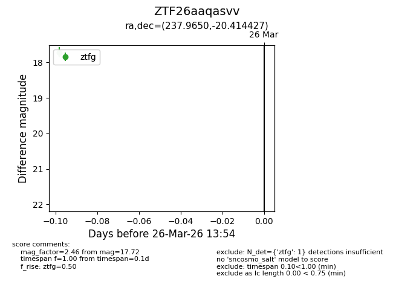
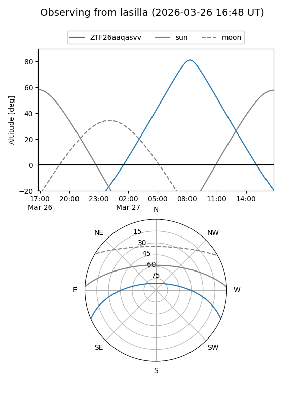
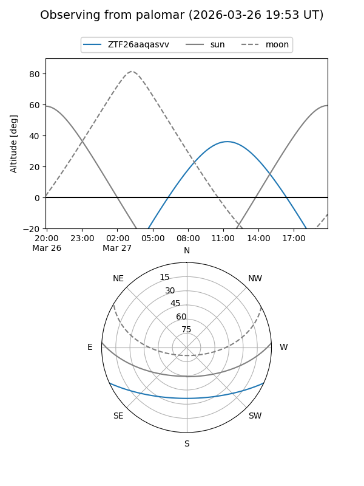

ZTF26aaqasvv
Target ZTF26aaqasvv at 2026-03-26 13:56
Aliases and brokers:
FINK: link
Lasair: link
ALeRCE: link
alt names
ZTF26aaqasvv (ztf,fink_ztf)
Coordinates:
equatorial (ra, dec) = 237.9650,-20.41443
equatorial (HMS+DMS) = 15:51:51.60,-20:24:51.94
galactic (l, b) = (350.2593,+25.44559)
Flags:
Photometry:
last ztfg=17.72
1 ztfg detections
Lightcurve

Visibility


Additional plots